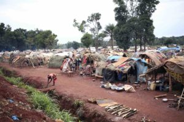

GLOBAL JOURNALIST
Global Stories
What's going on worldwide?

AFRICA


C.A.R. crisis stirred by diamonds, Russia
By Jason McLure

Eritrea's opportunity
By Jason McLure

Ethiopia’s new hope
By Jason McLure
Insurgents, poor schools plague northern Nigeria
By Jason McLure
South Sudan’s standoff
By Jason McLure
Debating overpopulation
By Jason McLure
ASIA

The market in human organs
By Jason McLure
‘One-child’ policy leaves China graying
By Jason McLure

India’s girl shortage
By Jason McLure
Internet addiction in China
By Jason McLure
‘Combat Obscura’ gives unfiltered view of Afghan war
By Jason McLure

Climate change in South Asia
By Jason McLure
-- MORE --